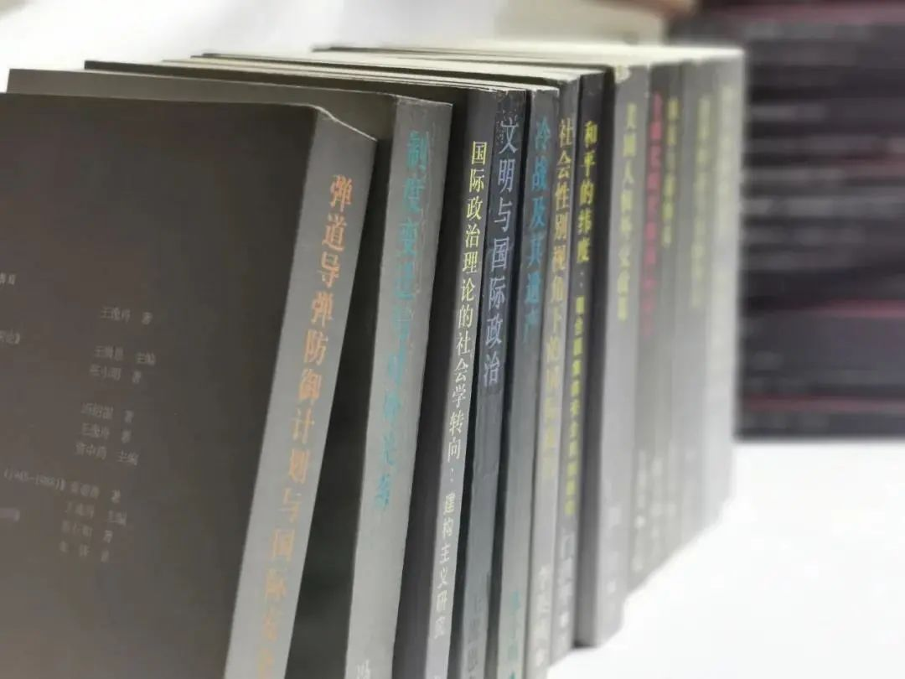
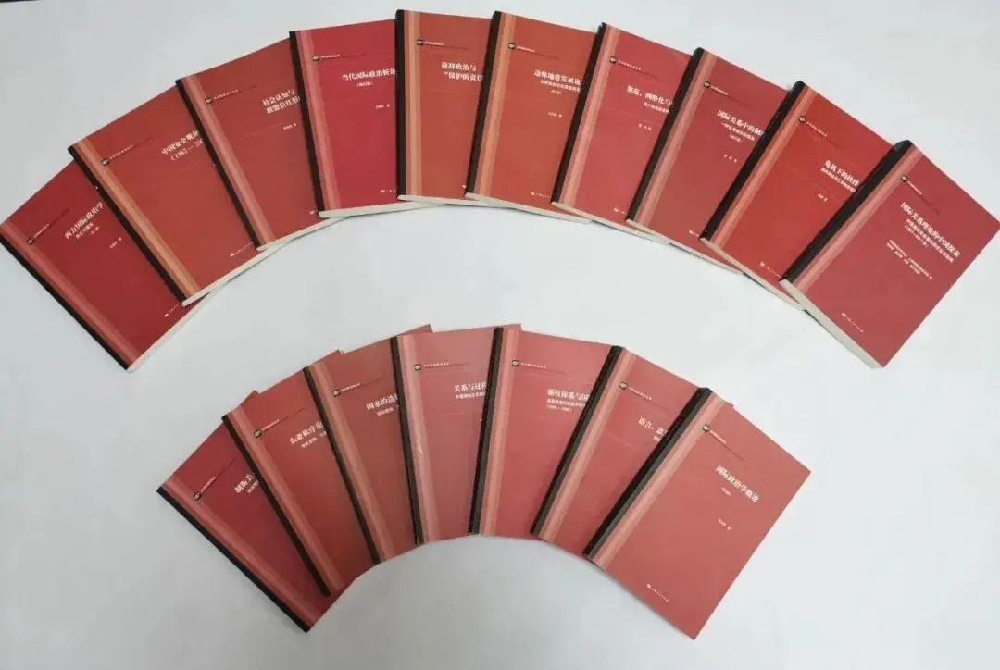

收录于合集
以下文章来源于知世书坊 ，作者知世书坊
知世书坊 .
上海人民出版社国际政治编辑室官方公众号。我们为您提供学术经典，剖析时政热点，分享做书趣事。在这里，让我们一起读懂世界。


“当代国际政治丛书”创办于1995年，是国内第一套以国际政治学专著为特色的丛书。丛书所收录的作品理论水平高，且具有前瞻性，已成为中国国际关系学界持续时间最长、专业影响力最大的原创类学术“丛书”品牌之一。丛书出版20余年来，立足于一贯的学术追求，以挖掘优秀学术作品为己任，努力为中国的国际关系学者打造顶级学术平台。
21世纪以来，中国与世界的互动不断加深，中国国际关系理论研究的主体意识日益显现。在百年未有之大变局下，中国无可推卸地承担着推进国际政治理论研究的责任；在话语体系的建设中，中国学者必然担当起构筑中国特色国际政治理论体系的重任。面对新的历史任务，“当代国际政治丛书” 不忘初衷、应时改版，新的选题在注重学理的基础上，突出中国视角、挖掘中国思想，不仅体现中国特色，也具有世界意义。

2021年丛书全新改版，推出的三种著作，是近年来中国国际关系学者的最新研究成果，代表了中国国际政治理论研究的最前沿，更是对非西方国际关系理论的有益探索，试图为构建国际关系理论的“中国学派”打下坚实的基础。
01.世界政治的关系理论
秦亚青 著
上海人民出版社2021年6月版
内容简介
本书借鉴了中国的文化和哲学传统，对世界政治进行了开创性的重新解读。作为中国建构主义研究的先驱，秦亚青教授发展了建构主义的一种变体，他认为用背景知识定义的文化孕育了社会理论，并使理论创新成为可能。基于这一论点，本书提出了“关系”的概念，将焦点从个体行动者转移到行动者之间的关系。这种关系本体论考察了关系创造行动者身份和为他们的行动提供动机的展开过程。这一令人兴奋的新概念吸引了全世界国际关系理论、社会理论和中国政治思想领域的许多学者，对于那些寻求为真正的全球国际关系项目搭建东西方桥梁的人来说，本书将会具有重要的启示作用。
作者简介
秦亚青，山东大学讲席教授，外交学院原院长、教授，比利时皇家学会外籍院士，奥斯陆和平研究所全球研究员。重点研究领域为国际关系理论和全球治理，主要著作包括：《霸权体系与国际冲突》（上海人民出版社）、《关系与过程：中国国际关系理论的文化建构》（上海人民出版社）、《全球治理：多元世界的秩序重建》（世界知识出版社）、 A Relational Theory of World Politics (Cambridge University Press)、 Globalizing IR Theory (Routledge)。
02.中华经典国际关系概念
潘忠岐 等著
上海人民出版社2021年5月版
内容简介
要在国际关系、国际政治和外交学领域形成具有中国特色的理论体系和知识体系，少不了要构建一整套具有中国特色、反映中国人世界观的核心概念。在马克思主义指导下，通过结合中国的外交实践，对中华经典国际关系概念进行“创造性转化”和“创新性发展”，则不失为一条建构中国概念的可行之路。呈现在读者面前的就是这样一种尝试的成果。
本书选择了一些具有中国特色、历史悠久并且在现有的西方国际关系理论中鲜有的经典概念，包括“阴阳”“太极”“和而不同”“和合共生”“势”“仁”等，试图在国际政治领域形成具有中国特色的理论体系和知识体系，构建一套具有中国特色、反映中国人世界观的核心概念。本书集合了多位国内著名国际关系、政治学、哲学的专家学者，包括苏长和、潘忠岐、陈玉聃、白彤东等，对中华经典国际关系概念进行“创造性转化”和“创新性发展”，以期为理解百年未有之大变局下的国际政治提供一种独特视角，在一定程度上弥补现有西方国际关系理论的不足，从而为创建国际关系理论的“中国学派”做铺垫。
作者简介
潘忠岐，复旦大学国际关系与公共事务学院教授、博士生导师，现任复旦大学中国研究院研究员、复旦大学外交学系系主任。主要研究领域为国际关系理论、国际体系、中国外交。代表作有：《世界秩序：结构、机制与模式》《国际关系理论：欧洲视角》《从随势到谋势：中国的国际取向与战略选择》，等等。
03. 位置现实主义：
**一种外交政策理论
** 宋伟 著
上海人民出版社2021年5月版
内容简介
本书对现实主义国际关系理论进行了创新，是一部讨论大国外交的理论研究著作。位置现实主义是作者提出的旨在通过国际体系位置分析大国整体国家利益和对外政策的理论。在界定大国的整体国家利益时，本书将大国分成了四种类型，并分别阐述了应该如何界定它们的整体国家利益，提出了相应的外交政策假设。通过对19世纪六大国（英国、法国、俄国、德国、奥匈帝国、美国）外交政策实践的历史考察，研究发现，这六个大国或多或少在一些时期的外交政策高度吻合了位置现实主义的预期，而另一些时期并没有吻合位置现实主义的预期。
作者简介
宋伟，中国人民大学国际关系学院教授、博士生导师。1997年进入北京大学国际关系学院读本科，本科、硕士、博士都在北京大学完成，博士期间赴日本早稻田大学留学，2007年获得北京大学和早稻田大学双博士学位。2007年起留校任教，先后担任北京大学国际关系学院讲师、副教授，2015年8月调入中国人民大学国际关系学院工作。已发表专著两部《国际关系理论: 从政治思想到社会科学》与《捍卫霸权利益: 美国地区一体化战略的演变（1945-2005）》，译著三部，学术论文六十余篇。
附：“当代国际政治丛书”书目
**
**
世界政治的关系理论
秦亚青 著
中华经典国际关系概念
潘忠岐 等著
位置现实主义：一种外交政策理论
宋伟 著
国际政治学概论（第五版）
李少军 著
说辞政治与“保护的责任”的演进
陈拯 著
边缘地带发展论：世界体系与东南亚的发展（第二版）
王正毅 著
西方国际政治学：
历史与理论（第三版）
王逸舟 著
国际关系理论的中国探索——中国国际关系理论研究文献选编（1987—2017年）
中国国际关系学会、上海国际关系学会编
国际关系中的制度选择：一种交易成本的视角（增订版）
田野 著
制衡美元：政治领导与货币崛起
李巍 著
当代国际政治析论（增订版）
王逸舟 著
东亚秩序论 ——地区变动、
力量博弈与中国战略
门洪华 著
国家的选择 ——国际制度、国内政治
与国家自主性
田野 著
关系与过程
——中国国际关系理论的文化建构
秦亚青 著
危机下的抉择
——国内政治与汇率制度选择
曲博 著
规范、网络化与地区主义
——第二轨道进程研究
魏玲 著
社会认知与联盟信任形成
尹继武 著
全球公共问题与国际合作：
一种制度的分析
苏长和 著
语言、意义与国际政治
——伊拉克战争解析
孙吉胜 著
霸权体系与国际冲突
秦亚青 著
中国安全观分析（1982—2007）
李小华 著
意识形态与美国外交
周琪 主编
国际政治理论的社会学转向：
建构主义研究
袁正清 著
世界秩序：结构、机制与模式
潘忠岐 著
社会性别视角下的国际政治
李英桃 著
和平的纬度：
联合国集体安全机制研究
门洪华 著
美国人权外交政策
周琪 著
国家与超国家
——欧洲一体化理论比较研究
陈玉刚 著
弹道导弹防御计划与国际安全
朱锋 著
全球化时代的国际安全
王逸舟 主编
国际政治理论探索在中国
资中筠 主编
制度变迁与对外关系
——1992年以来的俄罗斯
冯绍雷 著
冷战及其遗产
张小明 著
文明与国际政治 ——中国学者评
亨廷顿的文明冲突论
王缉思 主编
赠书福利
请参与本次活动的读者转发本文至微信朋友圈 （不设分组、名单公布前不可删除） ，并于 7月21日22：00 前 将截图发送至“ 国小政 ”（下文获取二维码添加好友），将获得本次新书的抽奖资格。（中奖率很高哦！）
**
**
**
**
**
**
添加 “国小政”微信
获取最新资讯

好好学习，天天“在看”